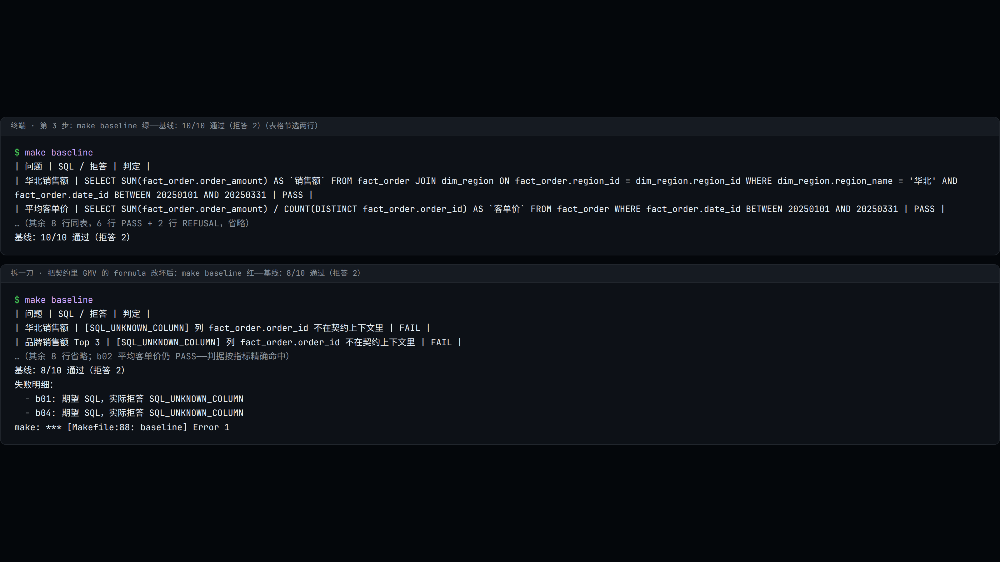

练本 · 阅读版（md 正典派生，改内容请改 manual/page-15.md）
第 15 页 · 审生成：同一把尺子，量模板也量模型
前置：第 13 页起的整栈到上一页（第 14 页）结束时仍在跑，可以继续开着，本页一条服务都不用——
make stage4完全离线，不需要 MySQL/ES/Qdrant、不需要.env、也不需要模型 key。命令都在仓库根目录、同一个终端里整段连续执行。
这一页构建什么
给生成层立一把可重复的尺子：10 题基线 baseline（问题 → SQL/拒答 → 判定；backend/tests/generate/baseline.yaml）+ 一套语义断言。
别搞混：它和第 14 页 backend/tests/recall/golden.yaml 的 20 题召回黄金集不是同一个东西：这 10 题是 8 题复用那 20 题的题面 + 2 题越界拒答。
审什么：生成器是确定性的、不走模型；你审的不是“像不像人写的”，而是同一个判据能不能同时量模板和模型——改契约、改生成逻辑，同一把尺立刻红，改回来立刻绿。
猜一猜
动手前写下答案：
- 把契约里 GMV 的公式改坏（换成 AOV 的公式），baseline 10 题里会有几题变红——10 题全红、只红用到 GMV 的那几题、还是 0 题（生成器有自保）？
- 生成器是模板还是模型？一条“模板生成”的 SQL 和一条“模型生成”的 SQL，能用同一组判据判对错吗？
动手
make stage4/make baseline走uv run --frozen，不会改 lock；只有脚本里的裸uv run（make stage3、make stage0-ui、make stage6-ui）或你手敲uv run会按本机镜像源重写backend/uv.lock（lab白名单不含它，reset也不还原）。仅当git status显示 lock 变脏时再敲git checkout -- backend/uv.lock还原。
第 1 步：拍快照。 拆一刀要改契约，先留退路（同名快照会被拒绝；重做本页就换个名字，如 p15-before-2，本页后面第 3 步 reset 的名字也一起换）：
scripts/lab save p15-before
回显 已保存快照 "p15-before"：169 个文件。（169 数的是白名单文件数，因工作区而异）。
第 2 步：先跑离线判据（秒级，不连任何服务）：
backend/.venv/bin/python -m pytest backend/tests/generate -q
第 3 步：跑 10 题基线 + 整层验收。 make stage4 依次跑“10 题基线 → 生成层测试 → 全部后端测试”，最后一行 S4 PASS，要跑几十秒（本机实测 38 秒），别以为卡死：
make stage4
你应该看到
第 2 步（秒数因机器而异；5 条 skipped 不是失败——那是 5 份召回扩展/上下文过滤提示词，输出形状不是 sql_or_refusal，按设计跳过）：
122 passed, 5 skipped in 0.96s
第 3 步（节选；基线表格只留两行，长行按终端折行）：
== S4 · 10 题基线（问题 / SQL / 判定） ==
| 华北销售额 | SELECT SUM(fact_order.order_amount) AS `销售额` FROM fact_order JOIN dim_region ON fact_order.region_id = dim_region.region_id WHERE dim_region.region_name = '华北' AND fact_order.date_id BETWEEN 20250101 AND 20250331 | PASS |
| 平均客单价 | SELECT SUM(fact_order.order_amount) / COUNT(DISTINCT fact_order.order_id) AS `客单价` FROM fact_order WHERE fact_order.date_id BETWEEN 20250101 AND 20250331 | PASS |
基线：10/10 通过（拒答 2）
== S4 · 生成层测试（提示词契约 / 静态校验 / 基线 / 三方对齐） ==
122 passed, 5 skipped in 0.76s
== S4 · 全部后端测试（S0 + S1 + S2 + S3 + S4） ==
813 passed, 30 skipped in 32.06s
S4 PASS
不是失败：第 3 步最后那个 30 skipped 里，23 条是 REBUILD_INTEGRATION 集成测试（没设 REBUILD_INTEGRATION=1 时按设计跳过，和第 14 页那 23 条同源）、5 条是第 2 步同款的提示词形状、2 条是安全语料的拒答题。
看逐条原因：单独跑 (cd backend && .venv/bin/python -m pytest -q -rs) 的 short test summary info。

对账
- 猜 2：模板，不是模型。 默认生成器是
backend/app/generate/deterministic.py里的确定性实现：指标公式直接抄契约的formula，表/列/取值/时间边界也都来自契约。sql_or_refusal输出契约、app.generate.guard静态校验、baseline.yaml的语义断言，三道都不认“谁写的 SQL”。 换真模型只替换HttpLlmGenerator这个实现（配三个REBUILD_LLM_*变量），模型写出的 SQL 过的是同一个输出形状、同一套check_sql；baseline.yaml断言的是 SQL 里的事实，也不认识生成器——所以尺子量得动两边。 本页不配 key，只跑可复现的确定性一侧（想换真模型：见appendix/llm-endpoint.md）。 - 猜 1：只红用到 GMV 的两题（b01 华北销售额、b04 品牌销售额 Top 3），其余 8 题照绿——下面拆一刀真验。注意 b02 平均客单价生成的 SQL 里也有同样的除法，但它用的是 AOV 指标、公式没被改，照样 PASS：判据按每题依赖的指标精确命中，不是拿一个字符串全库搜。
- baseline 量的是什么：表、列、指标、取值。 b01 的
sql_contains断言：SUM(fact_order.order_amount)（指标公式）、dim_region.region_name与'华北'（表/列/真实枚举值）、BETWEEN 20250101 AND 20250331（数据边界）；sql_not_contains防串味（不许出现dim_region.province、不许混进COUNT(DISTINCT）。它不是字符串快照：换行、别名可以变，这四类事实不能变。 - 为什么生成错要先查契约： 生成器是契约的翻译器，不是发明家。契约错（公式、枚举值、粒度、时间边界），它只会“忠实地错”；这次允许用哪些表/列/值，上下文也是按契约裁的。所以 SQL 错先回契约找那一行；契约对了还错，才轮到生成逻辑。
- 可复现 vs 采样： 确定性侧同题同解，
test_same_question_always_produces_the_same_sql把这条钉死，你可以写“必定”。真模型侧同题可能这次拒、下次过——eval/FINDINGS.md3.1 记录过同题第一次校验失败、随后 3 次全过，所以模型结论只能写“3 次里几次过”，不许拿单次当结论。
你现在拥有：一条能自己判断“生成算不算合格”的验收链——
make stage4一条命令给出 10/10 与S4 PASS，判据细到表/列/公式/取值；它不挑生成器，模板和模型用同一把尺。
拆一刀
- 把契约里 GMV 的公式改坏（看尺子红在哪几题）：打开
contracts/schema.contract.yaml，找到metrics:下name: GMV那段，只改formula这一行（relevant_columns等别动）。 别用全局替换：SUM(fact_order.order_amount)在 AOV、平均件单价公式里也出现，Ctrl+H 会一次改坏 3 个指标（契约自检红 8 处而不是 3 处），红的不止 b01/b04；只动name: GMV下面那一行。 改前是SUM(fact_order.order_amount)，改成：
formula: "SUM(fact_order.order_amount) / COUNT(DISTINCT fact_order.order_id)"
- Ctrl+S 保存，再跑一次基线（不用重跑整层验收，这一条就够看见红；下面节选两行 FAIL 和末尾汇总）：
make baseline
| 华北销售额 | [SQL_UNKNOWN_COLUMN] 列 fact_order.order_id 不在契约上下文里 | FAIL |
| 品牌销售额 Top 3 | [SQL_UNKNOWN_COLUMN] 列 fact_order.order_id 不在契约上下文里 | FAIL |
基线：8/10 通过（拒答 2）
失败明细：
- b01: 期望 SQL，实际拒答 SQL_UNKNOWN_COLUMN
- b04: 期望 SQL，实际拒答 SQL_UNKNOWN_COLUMN
末尾 make: *** [Makefile:88: baseline] Error 1 是判据在报红，不是命令敲错。
红的原因是一条链：公式多了 COUNT(DISTINCT fact_order.order_id) → 生成器把它原样拼进 SQL → 但 GMV 的 relevant_columns 只有 fact_order.order_amount，上下文里没有 order_id → 静态校验按“列存在”拒绝 → 生成降级成拒答 → 期望 SQL 的两题 FAIL。
连带红：同一处改动还让 pytest backend/tests/generate -q 变成 12 failed, 110 passed, 5 skipped（12 条里只有 2 条是基线题，其余是“生成的 SQL 只能用上下文里的列”这类断言被连带打红），第 11 页的契约自检也会报 3 处矛盾——在仓库根目录补跑这一条就能当场验证：
补跑：(cd backend && .venv/bin/python -m app.schema_contract --check) 末行 FAIL: 3 个契约问题，三个码：
METRIC_RELEVANT_COLUMNS（公式引用的列 ≠relevant_columns）METRIC_VALUE_MISMATCH（公式实际值 ≠ 契约期望）METRIC_FORMULA_SEMANTICS（公式语义不对）
一处契约、三处闸门同时响。
- 还原并回绿（
reset会先拍一张pre-reset-…安全快照，末行确认恢复成功）：
scripts/lab reset p15-before --yes
make baseline
现在工作区与快照 "p15-before" 完全一致。
基线：10/10 通过（拒答 2）
结论：生成器读契约，契约一改，整条链路跟着变。 改之前先想清楚尺子会在哪里红——这就是“审生成”要练的肌肉。